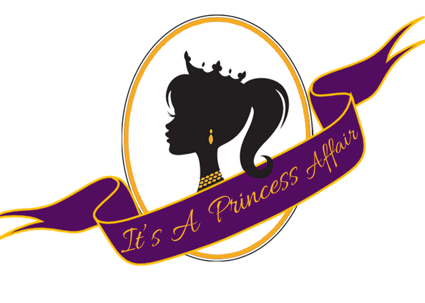

<ons-page>
  

	<ons-toolbar modifier="transparent">
		<div class="right">
			<ons-toolbar-button ng-click="menu.setMainPage('markers.html', {closeMenu: true})" >
				<ons-icon icon="ion-ios7-location" style="color: white; font-size: 28px;"></ons-icon>
			</ons-toolbar-button>
		</div>
		<div class="left">
			<ons-toolbar-button ng-click="menu.toggle()">
				<ons-icon icon="ion-navicon-round" style="color: white; font-size: 28px;" fixed-width="false"></ons-icon>
			</ons-toolbar-button>
		</div>
	</ons-toolbar>
      <div class="app-page" ng-controller="pluginsController">

	<div class="details-content glass">
		<div class="welcome">
			<h1 class="home-title">Princess Affair</h1>
			<p class="subtitle">
				Fashion.
			</p>
			
		</div>
</div>
</div>
		<div class="blur">
			
		</div>
	

	<svg version="1.1" xmlns="http://www.w3.org/2000/svg">
		<filter id="blur">
			<feGaussianBlur stdDeviation="10">
		</filter>
	</svg>
</ons-page>
